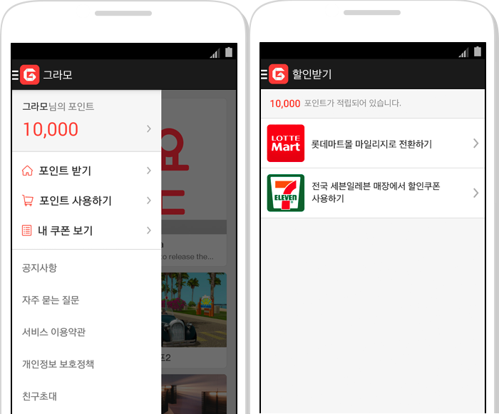

Gramo 그라모
그라모는 그라모 앱 내에서 광고를 통해 앱을 다운 받거나, 비디오 광고를 시청완료하거나, 특정한 목표를 달성한 사용자에게, 각각의 약속된 포인트를 제공하는 서비스로 해당 서버를 개발하였습니다.
서버는 python의 django로 개발되었으며 관리자가 원하는 광고를 등록 및 유저의 기본정보에 맞는 광고를 설정 및 제한할수 있습니다.
광고의 경우 자체 등록광고 및 타사지원광고(trialpay, adpopcorn, tnk, fyber, linkprice)의 callback API를 통한 적립 로직 및 편의점(cu, 세븐일레븐, GS) 및 체인점(inumber)의 쿠폰 발급이 주 서비스 입니다.
자체 광고API를 통한 적립과 안드로이드 푸쉬을 개발하였습니다.
해당 프로젝트는 실제 사용가능한 쿠폰인 만큼 앱상의 보안을 중점적으로 개발하였습니다.
